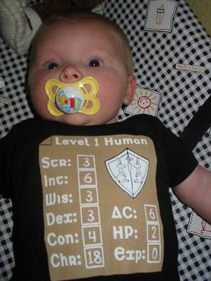
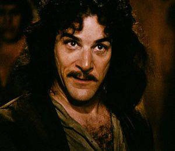
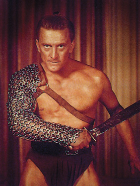

PJ
 De: La Frikipedia, la enciclopedia extremadamente seria.
De: La Frikipedia, la enciclopedia extremadamente seria.
Abreviatura de "Personaje Jugador" en un juego de rol; es decir, pringao al que le toca sufrir y soportar las crueles decisiones del máster y cuya vida está en manos de los malévolos dados. Se caracteriza por tener un trozo de papel con números al que llama "ficha", en la cual se detallan las habilidades de su personaje, y cierta tendencia sadomasoquista a sufrir.
Descripción de un PJ
 Ser un PJ es algo que se nota desde edades muy tempranas
¿Como se distingue a un PJ del resto de la extraña fauna que son los jugadores de rol? Aquí te damos una serie de pistas para facilitar su identificación.
- Habitualmente, los PJ se reunen en torno a una mesa llena de papeles, dados, calculadoras, lápices y libros extraños. De todas las personas sentadas alrededor de la mesa, una será el máster y el resto, PJ.
- El PJ se aferrá con fuerza a una hoja de papel (ficha) en la que se detallan sus habilidades. Para estar seguro, intenta romper la ficha de un PJ. Si alguien se te lanza encima y empieza a morderte, ese es un PJ.
- Los PJ NUNCA tiran los dados con tranquilidad. Siempre están nerviosos, o rezando a deidades desconocidas, o insultando a los dados. Si el resultado obtenido no es satisfactorio, el PJ lanzará un aullido de rabia y dolor mientras se echa las manos a la cara. Si es satisfactorio, saltará de la silla agitando los brazos con grandes muestras de felicidad.
- Igualmente, los PJ nunca están tranquilos cuando el máster tira los dados o consulta los libros raros. Se muerden las uñas, rezan o blasfeman.
- Si una persona de las reunidas en la mesa mira con compasión, ironía o sarcasmo a otra persona y esta última se sobrecoge de terror, sin duda esa segunda persona es un PJ (el primero será el máster).
- Después de un combate, los PJ son esos que se dedican a hacer cálculos frenéticos con las calculadoras para averiguar cuantos PX necesitan para subir de nivel.
- Si estalla una discusión en la mesa, el único que se recuesta tranquilamente en la silla y pasa de todo es el máster, por lo que los que se están tirando las sillas y calculadoras a la cabeza son los PJ.
Perfil psicológico de un PJ
Un PJ debe interpretar un personaje en un juego de rol, por lo tanto tiene que cumplir una serie de requisitos.
- Lo más esencial: ansia por PX (o puntos de experiencia). Los PX son la vida. Los PX lo son todo. Sin PX, no eres nadie. Debes conseguir todos los PX que puedas para subir de nivel y hacerte un personaje cada vez más poderoso. Mata a tus aliados si ello te da PX. Vende a tu madre si ello te da PX. Hazle favores sexuales al máster si ello te da PX. Todo sea en nombre de los PX.
- Instinto de supervivencia desarrollado. ¿De que te sirve ganar PX si tu personaje muere? Haz todo lo posible por sobrevivir. Debes resistir. Tu objetivo es ser el personaje más poderoso de la historia del rol, y eso es algo que no podrás conseguir si mueres.
- Paranoia conspiratoria. Todos son enemigos. El guarda de la puerta. El enano borracho que te saluda desde la barra. La hija maciza del posadero. Tus compañeros de viaje. Tu fiel mascota. Los piojos de tu fiel mascota. El master. Todos ellos son enemigos que conspiran contra ti, que quieren robarte tus objetos mágicos y matarte para conseguir PX. No dejes que lo hagan ¡Mátalos tú primero!
- Sadomasoquismo. En el fondo, todos los PJ disfrutan sufriendo. Les gusta que un troll les arranque las piernas de cuajo. Les gusta que un ladrón les robe todo lo que tienen y los dejen en pelotas en mitad de una noche fría. Les gusta ser atacados por sus compañeros. Y disfrutan enormemente haciendo sufrir a los demás.
- Sumisión al máster. El máster es dios. El máster lo es todo. Él es quien te da los PX. Rebelarse contra su voluntad es muerte segura. No desafíes al máster.
Los PJ en la historia del rol
Al principio, los juegos de rol consistían únicamente en un máster solitario que se dedicaba a narrar historias para nadie, en las que una serie de personajes creados por él (PNJ) se mataban aleatoriamente entre ellos. Tolkien y Lovecraft son ejemplos de estos masters solitarios.
Un dia, un master de nombre desconocido que se aburría demasiado tuvo la idea de llamar a unos amigos suyos y hacerles crearse unos personajes a los que introduciría en su historia para luego matarlos lenta y cruelmente. Así nacieron los sufridos PJ, y con ellos, el rol tal y como lo conocemos hoy día.
Los PJ, sin embargo, han sufrido una evolución a lo largo de la historia del rol. Desde sus orígenes como peleles del máster, los PJ se han ido diversificando, desarrollando pautas de comportamiento más específicas.
Tipos de PJ
En esta sección se detallan diferentes tipos de PJ, clasificados según su comportamiento y perfil psicológico concreto.
- Jugador de relleno/Bulto: dicese del que baja a jugar y se pasa toda la partida de brazos cruzados, descruzandolos para coger un dado y tirar en los combates.
- Cheater: Dícese del jugador que hace trampas, saltándose las reglas como le viene en gana y aprovechándose de la ingenuidad del máster, para convertirse en un super-PJ. Suele tener una vida corta.
- Munchkin: Dícese del jugador que conoce las reglas del juego mejor que el máster y se aprovecha de vacíos legales y normas contradictorias para convertirse en un super-PJ. Se diferencia del Cheater en que nunca hace trampas, solo explota las reglas al máximo. De todas formas, también suele tener una vida corta.
- Power-gamer: Subraza de Munchkin que solo se centra en personajes ostiadores.
- Erudito, Repasador o "Maestro de Ediciones": El summun del PJ Munchkin. Este engendro se conoce las reglas no solo del libro actual con el que están jugando, sino también de ediciones anteriores y posteriores, con su fe de erratas, novedades, modificaciones y hasta sus tablas. Una variante es el "Maestro de Suplementos", que se conoce las reglas adicionales que han salido en suplementos para el juego. La mezcla de ambos se conoce símplemente como "Maestro Erudito" o "Cállate ya tio cansino".
- Revientapartidas: Jugador odioso de vida corta que tiene la detestable capacidad de echar al traste las partidas. Utiliza varios métodos:
a) Mirar los papeles del máster cuando este se despista y cantar a los cuatro vientos quien es el traidor, o el malo final, o que cofre tiene trampas, etc...
b) Conocerse el trasfondo general del escenario mejor que el propio máster e ir desvelando trama
c) Atacar a sus compañeros sin causa ni provocación alguna
d) Ponerse a hacer gilipolleces en una partida seria hasta que el máster decide marcharse indignado o sacrificar al Revientapartidas a la primera deidad que se le ocurra.
Lo peor del Revientapartidas es que cualquier tipo de PJ puede evolucionar a él, especialmente los Munchkin y los Cheater.
- Llorón: Irritante PJ que no hace otra cosa que farfullar y quejarse al máster cuando le pasa algo malo. Emplea frases como "no! por que siempre a mi?" "me has cogido manía o algo?" o "no uses ese puto dado que está gafado".
- Pro: Impecable PJ que conoce a la perfección el arte de jugar al rol y, generalmente, la forma de dirigir del máster que le toca, y por tanto hace lo posible por jugar bien.
- Suicida guay/Berseker/Temerario: PJ que normalmente tiene preferencia por personajes ostiadores y cuyo único objetivo es matar el mayor número posible de enemigos y de la forma más sanguinaria o molona posible. Suele tener una muerte repentina y violenta, pero no le importa. Al minuto ya se ha hecho otra ficha de personaje ostiador para seguir con la matanza.
- Graciosillo: Jugador que siempre está tratando de hacer la gracia, bien al master y al resto de PJ, bien en el desarrollo de la trama. Al principio hace gracia, pero normalmente suele hacer una gracia en el momento menos oportuno y tener una muerte repentina y violenta.
- Pelota: Su nombre lo dice todo. Especimen de PJ que se caracteriza por pelotear al master regalándole comida, alabando sus historias y poníendose de parte de este cuando toma la decisión de matar a un PJ que no sea él. Los master ingenuos y novatos se dejan seducir por este especimen; los master expertos dejan que primero les regale comida y luego lo matan de la forma más contundente posible.
- Novato: Posiblemente uno de los PJ más irritantes de todos, pero todos hemos sido de este subtipo alguna vez. Se trata de un PJ que nunca antes ha jugado al rol, o al menos al juego concreto al que está jugando. No sabe nada, no entiende nada, no encuentra las cosas en su ficha y siempre pregunta al máster el porque de las cosas.
 Este es Íñigo Montoya. ¿Que que hace aquí? No sé, pero tenía que poner alguna foto, no?
- Íñigo Montoya: Dicese del jugador que cuando se hace ficha nueva, el nuevo personaje suele ser hijo/hermano/amigo/etc. del anterior que tuvo
- Chupón: persona que se ofrece continuamente a hacer cosas por el master a cambio de unos pocos px.
- PJ con novia/Calzonazos/Enchochao: pj que abandona la partida para irse con su novia, mujer, rollo...etc. dejando solos a sus pobres compañeros
- Suicida pelma/Candidato a cadáver/"¿Solo cinco trolls?": Este PJ se caracteriza por desafiar al máster cuando se da una situación peligrosa, con frases del tipo "buah, vaya mierda de malo", "con que esas tenemos, eh?" o "¿solo cinco trolls?". Inevitablemente, dicha frase hace que el máster convierta la situación peligrosa en potencialmente mortífera. Cuando se resuelve la situación, la inmensa mayoría de los PJ están o muertos o muy mal parados, salvo el Sucida pelma, que sorprendentemente no tiene ningún rasguño. Este personaje suele morir ajusticiado por sus compañeros de grupo.
- Cazador de PX: Normalmente, los PX son el único objetivo de los PJ, pero este engendro ha convertido el arte de conseguir PX en algo religioso y/o metafísico. Siempre trata de hacer algo que le pueda reportar PX, y exige PX por todo, hasta por pegarle una patada a una piedra. Es capaz de llevar a cabo misiones potencialmente letales sin remuneración alguna solo a cambio de PX.
- Rata codiciosa: El único objetivo de este PJ son las recompensas. Nunca hará nada si no hay remuneración a cambio, y si se trata algo como recuperar un objeto robado o rescatar a alguien, jamás lo entregará si antes no se le paga más de lo acordado. Si además se dedica a robar, pasa a conocerse como "Cleptómano"
- Chulito: Este personaje se caracteriza porque siempre trata de ser el más guay en todo, arriesgándose a realizar proezas estúpidas y potencialmente peligrosas solo porque molaría si las consigue realizar. Suele morir pronto.
- Salido: No hay que decir mucho. Un personaje cuya única motivación es follarse todo lo que se mueva. Este comportamiento indica que en la vida real no se come un rosco.
- Cerdo traidor: La única motivación de este PJ es asesinar a sus compañeros o abandonarlos robándoles todo en cuanto tenga la oportunidad. Buscará cualquier excusa para ello, y en ocasiones lo hará sin excusa. Suele evolucionar a Revientapartidas.
- Malkavian: Los PJ Malkavian de Vampiro la Mascarada han convertido el interpretar un personaje demente en toda una escuela. Estos PJ son de acciones inexplicables e imprevisibles, y creen que la locura de su personaje justifica adecuadamente las gilipolleces que hacen. Ej: "Por que has hecho esa gilipollez?" "Tio, porque estoy loco" "Ya, pero tu personaje padece fobia a los globos rosas, no psicosis homicida" "Que estoy loco tio, que soy imprevisible" Y así todo el rato.
- Imitador: es aquél personaje que tiene el mismo aspecto, nombre y carácter que algún personaje de televisión, manga, videojuegos o literatura, a veces incluso de otros juegos de rol. Son capaces de mutar y cambiar de personaje imitado en mitad de la partida, aunque eso signifique cambiar de sexo, ropa y aspecto en cuestión de segundos, por lo que el resto de PJ's y el Máster nunca saben con quién están hablando. Exigirá al master tener el aspecto, habilidades y poderes del personaje imitado, y si no le deja se convertirá en un Llorón.
Clases de PJ
En la clasificación anterior hemos puesto los PJ según su comportamiento. En esta, clasificaremos a los PJ según las habilidades de sus personajes y sus ocupaciones
 Personaje ostiador en su máxima expresión
- Ostiador/Máquina de picar carne/Guarro: El favorito de jugadores novatos, power-gamers y bersekers temerarios. Son personajes que solo sirven para el combate; cualquier tipo de tarea social o intelectual es anatema para ellos. Divertidos al principio, pero siempre acaban aburriendo porque no tienen clase ni estilo, solo un hacha muy grande. Se caracterizan por ser muy fáciles de interpretar y por carecer totalmente de personalidad. La denominación "guarro" proviene del World of Warcraft (guerrero-warrior-guarro; que originales son estos woweros).
- Guerrero molón: Como el Ostiador, pero con clase y estilo.
- Bola de fuego: Se podría decir que es un ostiador para jugadores más experimentados. Estos personajes se caracterizan por poseer un amplio abanico de habilidades sobrenaturales, especiales o mágicas enfocadas única y exclusivamente a la destrucción en masa. El favorito de los Munchkin.
- Mariposa: El personaje social que resulta indispensable en juegos de rol más "sofisticados" y que nadie quiere hacerse; también los hay en juegos de rol clásicos (epico-medievales), pero suelen tener una vida corta. Destacan por una gran variedad de habilidades sociales y alguna que otra intelectual, pero en el combate saben hacer poco más que esconderse.
- Healer/Clérigo: Un personaje altamente estigmatizado, que todo el mundo quiere tener en su grupo siempre y cuando no sea él a quien le toque interpretarlo. Caracterizado por sus habilidades sanadoras, los healer pueden conseguir una buena fortuna a base de cobrar por curar a sus compañeros. Además, goza de cierta protección frente a las puñaladas traperas de los demás PJ, ya que es el único que puede curarles. Salvo en D&D, que es una de las clases más desequilibradas, los healer no suelen destacar por nada más que por sus habilidades de curación.
- Sabio/Pitagorín: Personaje que destaca por sus habilidades intelectuales. Salvo que sea un mago, el Sabio sabe hacer poco más que descifrar runas, montar cachivaches y recitar de memoria volúmenes y volúmenes de conocimiento inútil.
- Bueno-para-nada: Intento frustrado de crear un personaje equilibrado. Es tan equilibrado, que no sirve absolutamente para nada.
- Pícaro/Asesino/Sociópata/Joputa rastrero: Personaje favorito de Cerdos traidores, Ratas codiciosas, Salidos y Cheaters. Se trata de un personaje que destaca en habilidades relacionadas con el robo, el sigilo y el asesinato. Indispensable en un grupo, ya que es él quien desmonta las trampas y abre las puertas cerradas con llave. Sin embargo, hay que tener cuidado, ya que estos personajes son cleptómanos y psicópatas en potencia. Nunca hablan con nadie y tratan de mantener siempre una apariencia de tio chungo.
- Druida/Hippy greñudo: Este personaje se caracteriza por invocar bichos y lanzarlos contra los enemigos y por fumar todo aquello que sea de color verde. En ocasiones, también sustituyen al Healer.
- Nigromante/Necrófilo/Levantamuertos: Tipo especial de Bola de fuego que enfoca sus habilidades a resucitar muertos y a hacer magia chunga. Se creen guays e invencibles, pero suelen morir pronto a manos de un PNJ inquisidor o equivalente.
- Personaje equilibrado: Mera quimera inexistente.
Ver también
Autor(es):
- Roms
- Cassius
- Dark esnob
- Dark trick
- Generibot
Frikipedia 2005-2016, Licencia
GFDL 1.2 - Extraído por FrikiLeaks